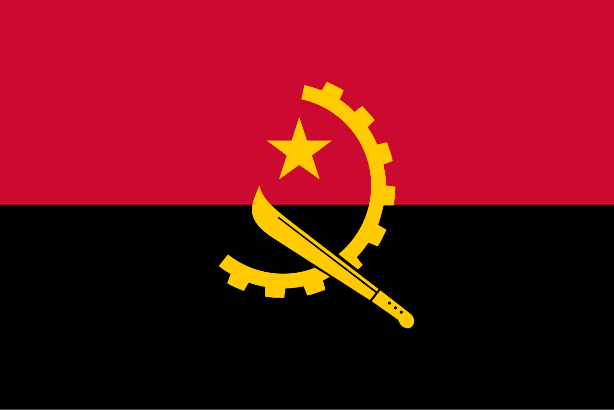

Ангола, расположенная в Юго-Западной Африке, является одним из крупнейших и наиболее богатых природными ресурсами государств континента. Страна обрела независимость от Португалии в 1975 году, после чего пережила длительный период гражданской войны, завершившейся лишь в 2002 году. Экономика Анголы носит резко выраженный сырьевой характер, являясь вторым по величине производителем нефти в Африке и обладая значительными месторождениями алмазов, полезных ископаемых и сельскохозяйственным потенциалом. Несмотря на формальный статус республики, в стране сохраняется сильная президентская власть, а политическая система долгое время доминировалась одной партией.
Социально-экономическое развитие Анголы характеризуется противоречиями: несмотря на впечатляющий рост ВВП в нефтяной сектор, страна сталкивается с проблемами бедности значительной части населения, недостаточно развитой инфраструктурой и сильной зависимостью от импорта продовольствия.